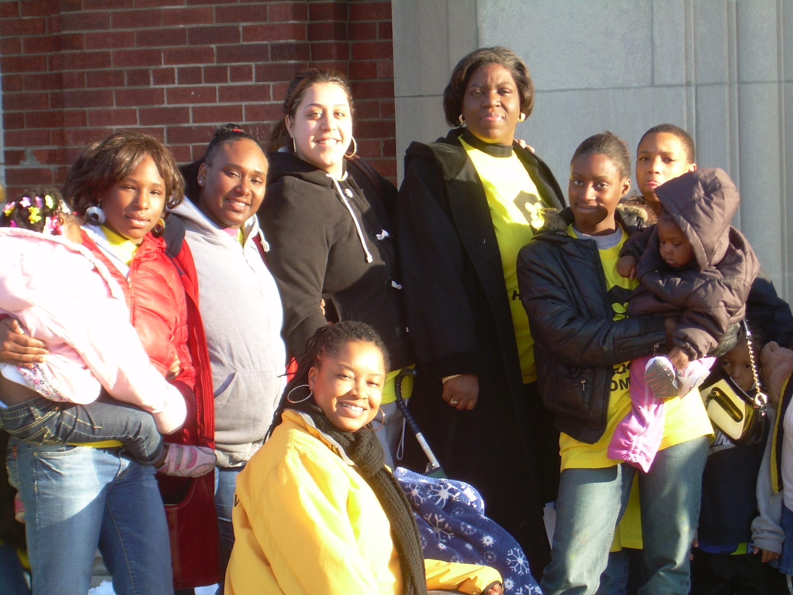
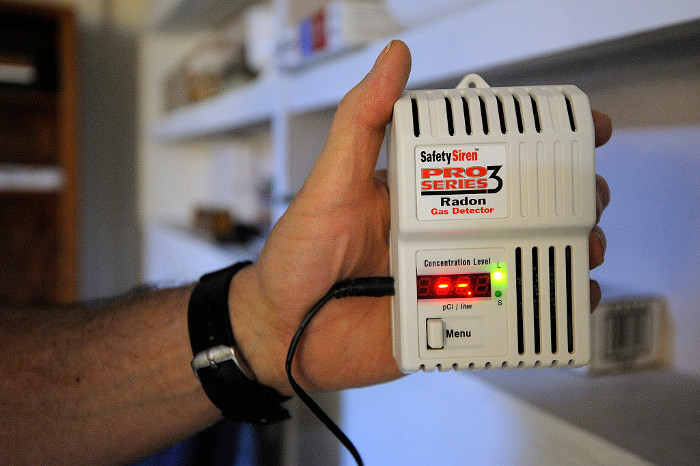
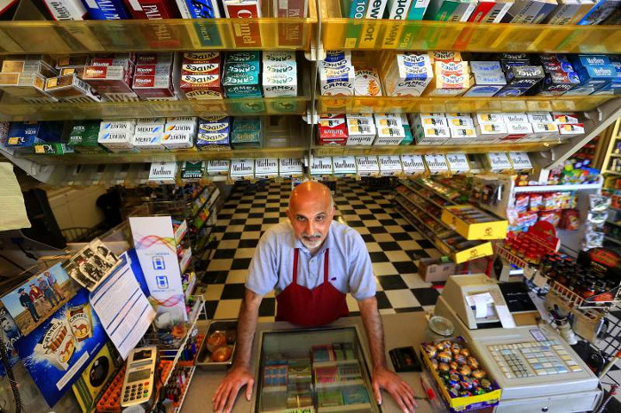
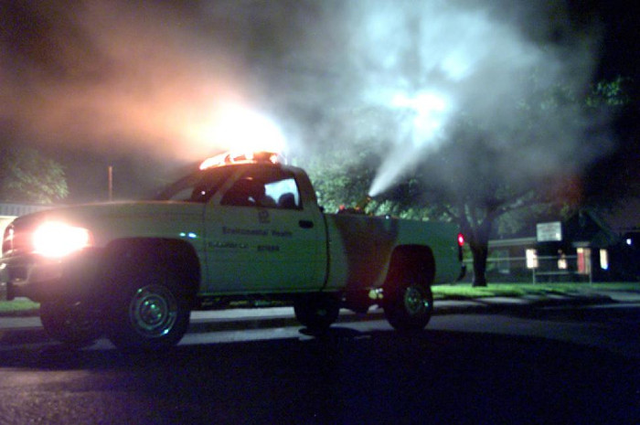
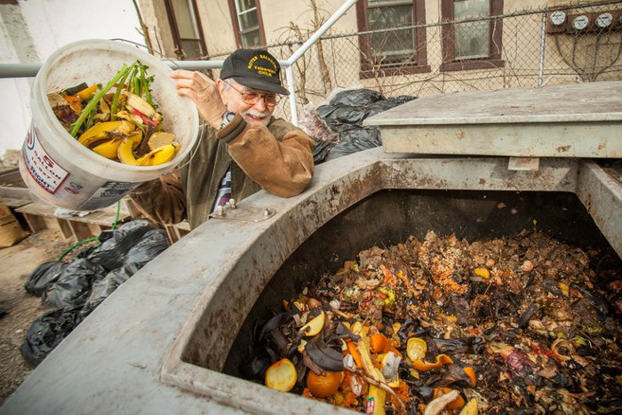
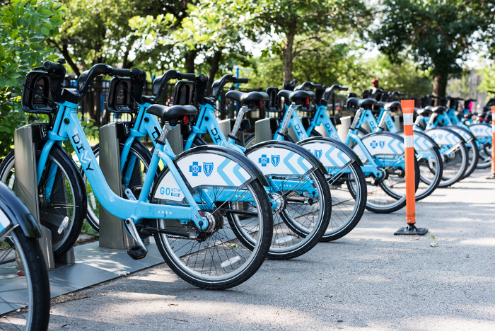
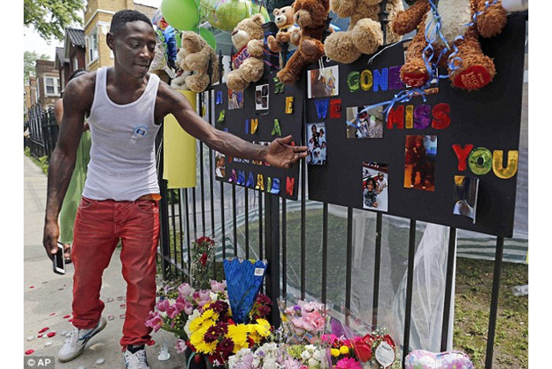

Part of the Chicago Housing Authority's Cabrini-Green
Scroll Down

Chicago Coalition for the Homeless
Fighting for the human right to housing since 1980
Scroll Down
Mayor Emanuel Recognizes Civic Leadership
Highlights the Importance of Volunteerism
Scroll Down
Educational opportunities in Chicago
Business Classes hosted by the Department of Business Affairs
Scroll Down
Gaffney Chicago Medical Center
Doctors performing a group diagnostic consultation
Scroll Down
News Chicago
News
May 4, 2016
Mayor Emanuel and CDPH Launch Healthy
Chicago Community Seed Grants
As part of the City's ongoing work to engage and
invest in neighborhoods, Mayor Rahm Emanuel and the
Chicago Department of Public Health (CDPH) announced
today the new Healthy Chicago Community Seed Grants,
providing up to six seed grants for community-based
initiatives to improve health and well-being. The new
grant opportunities are part of the citywide Healthy
Chicago 2.0 plan, announced March 29, and will be
discussed during of a series of community meetings
hosted by CDPH over the next month.
"Healthy Chicago 2.0 was designed with our
communitie's needs in mind to expand innovative
health strategies and improve the health and vitality
of each of our residents," said Mayor Emanuel.
"These new seed grants follow up on that promise
by focusing on eliminating inequities and ensuring that
every resident has the resources and opportunities
necessary to lead a healthy life"
Under the new effort, CDPH will award up to six
community seed grants, ranging between $10,000 and
$20,000, to local non-profit organizations with
innovative ideas on how to address health disparities
at a community-level. Awards will be based on how
closely programs align with the goals of Healthy
Chicago 2.0, a data-driven plan that identifies key
areas of improvement across the city.
"The best way to improve our city's health
is to engage the people who live here," said CDPH
Commissioner Julie Morita, M.D." By providing seed
grants and by holding these community meetings, we will
work directly with residents to help them improve their
communities. We look forward to engaging our residents
firsthand on how we can improve services to meet their
needs and improve quality of life in their
communities."
Building on the success of 2011's Healthy
Chicago plan, Healthy Chicago 2.0 provides strategies
to address traditional health issues as well as
systemic issues associated with poor health - including
housing, education and transportation - and focuses on
neighborhoods and demographic groups that continue to
face significant health disparities. The Public Health
Institute of Metropolitan Chicago in partnership with
CDPH will release the grant application later this
month which will be available at
www.cityofchicago.org/health.
The series of community meetings will bring together
CDPH officials, local leaders and community residents
to discuss both challenges and solutions regarding
health, focusing specifically on issues that are
relevant to each community. CDPH will use feedback from
the meetings to further implementation of Healthy
Chicago 2.0. The meetings, listed below, are open to
the public and refreshments will be served
May 4, 2016
Chicago, a modern metropolis on the
shores of Lake Michigan that's defined by
a love for fine art, baseball and the blues
Stroll museums and parks filled with art, and catch
live blues any night of the week in
Chicago's bustling Downtown district. Or
catch a lively sports game in this home to the Cubs and
White Sox baseball teams, and the Chicago Bulls
basketball team.
This metropolis is the third largest city in
America, but getting around is easy thanks to the
efficient above ground train, the 'L'.
Get your bearings from
the tallest skyscraper in the US, Willis Tower, which
defines the city's skyline. The viewing
platform, 1,353 feet (412 meters) above the busy
streets, offers unparalleled vistas of Lake Michigan,
Navy Pier, and other main attractions.
Lincoln Park, just north of downtown, has beaches,
sporting grounds and landscaped gardens. Soak up the
history of the Windy City at the Chicago History
Museum, located on the southern end of the park. Take a
stroll through the indoor gardens of the Lincoln Park
Conservatory, or spend an afternoon at the Lincoln Park
Zoo. This public zoo houses more than 1,000 animals.
Brookfield Zoo, 12 miles west of the city center, is
more than double the size and features dolphin
displays, big cats, a variety of primates and more.
Head back into the Loop district downtown for some
of the best shopping in the city, along Michigan
Avenue's Magnificent Mile.
It's a good place for lunch or dinner, or
people watching while you sip a coffee or beer. Just
south of the Magnificent Mile is the expansive Art
Institute of Chicago well worth a visit for its
collection of European and American masterpieces that
include Monet, Van Gogh, and much more. Nearby is
Millennium Park, a meeting place with public art and
spectacular summer concerts.
Some of America's most influential
figures came from Chicago. Visit the Ernest Hemingway
Museum and House, where the famous writer was born.
Architect Frank Lloyd Wright's first
house is in the pretty Oak Park neighborhood (called
the Frank Lloyd Wright Home and Studio). He designed
many houses and buildings in the area, including Unity
Temple, considered one of his best. On your way back
into town, stop off at the Garfield Park Conservatory,
an urban oasis of rare and exotic plants.
No trip to Chicago would be complete without
catching a baseball game at the legendary Wrigley
Field. At night, head to Navy Pier, packed with lively
bars and restaurants. Another option is to head out for
a night of blues at one of Chicago's legendary
clubs. Check out B.L.U.E.S. near downtown on
Chicago's north side or Kingston Mines a few miles
north near Lincoln Park. Both of these long established
venues have music every night of the week.

January 11, 2016
Radon Risks Increase During Winter Months, Get Your
Home Tested
January is National Radon Action Month and the
Chicago Department of Public Health (CDPH) is
encouraging Chicagoans to test their home for harmful
levels of radon. Radon is a naturally-occurring
colorless, odorless radioactive gas and is the leading
cause of lung cancer among non-smokers. The best time
to test homes for radon is during cold-weather months
when windows are shut and elevated levels of radon are
more likely to be detected.
"Exposure to radon causes lung cancer in
non-smokers and smokers alike," said CDPH
Commissioner Dr. Julie Morita. "We're calling
on every Chicagoan to test their home for radon in
order to help protect themselves and their
families."
"Low-cost test kits are available at stores
throughout the city and online," said Dr. Cortland
Lohff, CDPH medical director for environmental health.
"Taking action to test and fix high levels of
radon gas is not only a strong investment for your
health but also for your home."
Information on how to test, find a qualified radon
professional or obtain a test kit is available at
http://www.epa.gov/radon or by calling the Cook County
Radon Hot Line at (708) 865-6177.
You can't see, smell or taste radon, but it
could be present at a dangerous level in your home. In
fact, the U.S. Environmental Protection Agency (EPA)
estimates that radon causes more than 20,000 deaths
from lung cancer each year. And if you smoke and your
home has a high radon level, your risk of lung cancer
can increase even more.
Radon comes from the natural decay of uranium that
is found in nearly all soils. It can get into homes
through cracks and other holes in the foundation. Radon
can then be trapped inside the home, where it can build
up.
All homes with or without basements should be tested
for radon. Affordable Do-It-Yourself radon test kits
are available online and at home improvement and
hardware stores, or you can hire a qualified radon
tester.
CDPH recommends taking action to fix radon levels at
or above 4 picocuries per liter (pCi/L). Addressing
high radon levels often costs the same as other minor
home repairs. In most cases, a system with a vent pipe
and fan is used to reduce radon.
Improving the health and well-being of all
Chicagoans by creating safer and healthier homes is a
priority in CDPH's citywide health agenda, Healthy
Chicago. Healthy Chicago sets an ambitious sense of
purpose for Chicago and engages the city with bold
action and goals to make Chicago the healthiest city in
the nation.

December 9, 2015
City Council Passes Ordinance to Combat
Illegal Tobacco Sales to Prevent Youth Smoking
Mayor Rahm Emanuel today announced the city of
Chicago is taking action to keep tobacco out of the
hands of youth and encourage residents to live smoke
free. An ordinance passed by the City Council today
cracks down on the illegal sale of cigarettes across
Chicago by doubling fines for retailers who sell
illegal cigarettes.
"Keeping illegal cigarettes off of our
streets and out of the hands of our youth helps them
live longer, healthier lives," Mayor Emanuel
said. "This ordinance is the latest step
in our comprehensive effort to reduce smoking among
Chicago's youth."
The new ordinance increases fines on retailers who
sell illegal cigarettes from $1,000 to $2,000 for the
first offense when fewer than 40 unstamped tobacco
packs are found. When more than 40 unstamped packs are
found the fine increases to $50 per pack. Fines are
raised from $2,000 to $4,000 for any subsequent
violations. Repeat offenders also face revocation of
their tobacco license and a one-year tobacco sales ban
on the location and business owner.
The new ordinance follows a recently-enacted state
law that was pushed by the city to make clear that all
state and local tax stamps are required before the sale
of cigarettes. Prior to this legislation, possession of
more than 250 packs of contraband cigarettes was not
considered a class 4 felony if the Illinois State tax
stamp was affixed.
By strengthening the statute, tobacco retailers can
no longer avoid criminal prosecution by only purchasing
the state stamp but not the city/county stamp. Since
the beginning of the year, city inspectors have
conducted six confiscations where more than 250 packs
of cigarettes didn't have the required
stamps for a total of approximately $33,000 in
fines.
Under Mayor Emanuel, Chicago has become a national
leader in tobacco cessation by launching an innovative
array of programs, laws and tax policies. Chicago has
the highest cigarette tax in the country at $7.17 per
pack, imposed new e-cigarette tax which serving as a
strong disincentive for youth to start smoking. In
addition to revenue on fines introduced today, the city
expects to collect $21.6 million in cigarette tax in
2016.
"We were seeing a pattern where
cigarettes had the state tax stamp, but not the city or
county stamp, so business owners were skirting felony
charges," BACP Commissioner Maria Guerra
Lapacek. "This tough ordinance is designed
to deter this act because even one violation is one too
many. Doubling the fines for tobacco violators
continues to send a strong message to irresponsible
retailers who are bent to on breaking the
law."
Under Mayor Emanuel, Chicago has become a national
leader in tobacco cessation. Since the Mayor first took
office, youth smoking has decreased to an all-time low.
According to the CDC's most recent
numbers, 10.7 percent of Chicago high school students
have reported smoking, down from 13.6 percent in 2011
and 24.6 percent in 2001.
December 3, 2015
CDPH Hosts End-of-Year Flu Vaccine
Clinics for Vaccinate Illinois Week
The Chicago Department of Public Health (CDPH) is
once again teaming up with health departments and
healthcare organizations throughout Illinois to
encourage residents to get a flu shot during Vaccinate
Illinois Week (VIW), December 6 through 12. CDPH joins
public health officials and healthcare organizations
next week in recommending that everyone six months of
age or older receive a flu shot during the fall and
winter months, when the flu is most common.
VIW is a statewide observance focused on educating
the public about the importance of getting a flu
vaccine during the fall and winter months, and is
aligned with Centers for Disease Control (CDC)
recommendations for flu preparedness. VIW grew out of
Vaccinate Chicago week, which was first launched by
CDPH in 2012.
"It's not too late to get a flu shot," said
CDPH Commissioner Julie Morita, MD. "Flu season
typically peaks in January and February. Get vaccinated
now to protect yourself, your friends and your family
from illness."
During the fourth-annual VIW, next week Chicago
residents will see and hear coordinated digital, social
media, print and broadcast advertisements reminding
them to get vaccinated this season. Though the flu shot
does not cover every possible strain of influenza seen
every season, it still remains the single best
protection against the flu in general. The vaccines
available this year protect against the three or four
strains of influenza that are most likely to cause
people to get sick.
Residents can use the CDPH flu shot app to find a
flu shot clinic nearby or call 311 to locate one of our
Fast Track Immunization Clinics. CDPH Fast Track
Clinics provide flu vaccinations at no charge for
adults of all ages and all children over age six
months. No appointment is necessary; vaccinations are
given on a first come, first served basis.
Among those more vulnerable to complications from
flu are pregnant women, young children, the elderly and
anyone with underlying health conditions like asthma,
diabetes or a weakened immune system. A flu vaccine is
needed every year because flu viruses are constantly
changing.
In addition to getting a flu shot, you can also
reduce your risk by:
Washing your hands regularly with soap and
water. If soap and water are not available,
use an alcohol-based hand sanitizer.
Avoiding touching your eyes, nose or
mouth.
Avoiding close contact with sick people. If you
are sick, stay home from school or work.
Vaccinate Illinois Week (VIW) is a statewide
observance of National Influenza Vaccination Week, an
annual initiative led by the Centers for Disease
Control (CDC) to educate the public about the
importance of influenza vaccination throughout the fall
and winter months. In observance of VIW this year, the
Blue Cross/Blue Shield of Illinois headquarters in
Chicago will light up the building with the message
"Get a flu shot" from December 4 through
6.

September 2, 2015
City to Spray Insecticide Wednesday to
Kill Mosquitoes to Fight West Nile Virus
The Chicago Department of Public Health (CDPH) is
continuing its efforts against West Nile virus by
spraying to kill adult mosquitoes in parts of the
northwest side on Wednesday, September 2nd, 2015. This
is the third spraying of the season.
Weather permitting, the spraying will begin at dusk
on September 2nd and continue through the night until
approximately 1:00am, with licensed mosquito abatement
technicians in trucks dispensing an ultra-low-volume
spray. CDPH staff have been leaving door hangers in the
affected areas to notify residents that the spraying
will occur.
The material being used to control the adult
mosquitoes, Zenivex, will be applied at a rate
of 1.5 fluid ounces per acre. It is approved for use by
the U.S. Environmental Protection Agency and is used to
control mosquitoes in outdoor residential and
recreational areas.
Zenivex has been used effectively to
control disease-carrying mosquitoes and is
non-persistent, decomposing rapidly in the environment.
The rapid degradation of this product makes it an
excellent choice for control of West Nile
virus-carrying mosquitoes. The spray will be applied by
licensed mosquito abatement technicians from Vector
Disease Control International, a leader in the mosquito
control industry. Guiding the crews through the streets
will be supervisors from the Chicago Department of
Streets and Sanitation.
While the spray is not harmful to people or pets and
is routinely sprayed in residential areas across the
nation, residents of targeted neighborhoods may choose
to stay indoors and close their windows while spraying
is underway, as an extra precaution.
Each year, CDPH conducts a comprehensive West Nile
virus surveillance, prevention and control program. In
addition to spraying, this includes dropping larvicide
in catch basins, which helps limit the number of
mosquitoes that can carry the virus, and regularly
testing mosquitoes caught in traps throughout the city.
By utilizing data, the city is able to most efficiently
target high-risk areas for the virus.
Use insect repellent that contains DEET,
Picaridin or Oil of Lemon Eucalyptus.
Eliminate standing water. This includes
emptying water from flowerpots, gutters, pool
covers, pet water dishes and birdbaths
regularly.
Keep grass and weeds short to eliminate hiding
places for adult mosquitoes.
When outside between dusk and dawn, wear
loose-fitting, light colored clothing including
long pants, long sleeve shirts, socks and
shoes.
Check that all screens, windows and doors are
tight-fitting and free of holes and tears
As part of their ongoing response efforts, CDPH will
continue to collect mosquitoes from traps located
throughout the city and test these mosquitoes for West
Nile virus. Using results of these tests, CDPH will
determine the appropriate steps to be taken in order to
best protect Chicago residents.

July 29, 2015
City Council Approves Ordinance to
Expand Citywide Composting Program
City Council today approved Mayor
Emanue's ordinance to expand composting
operations at community gardens and urban farms across
Chicago, as well as create a citywide community garden
registry and urban farm accessory composting operation
permit. The goal of the program is to expand the type
of allowable compostable materials at both community
gardens and urban farms, while implementing common
sense measures to ensure public health standards are
maintained.
"Urban agriculture is an important
piece in making our communities more environmentally
friendly and sustainable," said Mayor Rahm
Emanuel. "Expanding composting is an easy
way to support our neighborhoods in growing their own
fresh fruits and vegetables right in their own
backyards."
In addition to landscape waste, such as grass or
shrubbery clippings, community gardens will now be
allowed to compost limited organic waste, including
food scraps such as vegetables and eggshells. All
community gardens will be required to register with the
City at no-cost through a new online community garden
registry. The ordinance also creates a new Urban Farm
Accessory Composting Operation Permit, which will allow
urban farms to apply for a permit with the Chicago
Department of Public Health to compost livestock waste,
in addition to landscape and limited organic waste.
"Composting supports the reuse of
material that would otherwise be considered waste and
sent to landfills," said Commissioner Julie
Morita, Chicago Department of Public Health.
"I look forward to implementing these new
policies and other best practices with our community
stakeholders in the upcoming composting
season."
The ordinance was drafted with input from local
urban agriculture and environmental stakeholders and
the City will continue to work with these partners as
the community is educated about new composting
opportunities.
"We applaud Mayor Emanuel for
introducing this ordinance, created with feedback from
advocates and cooperative work with City
departments," said Jen Walling, Executive
Director, Illinois Environmental Council.
"This ordinance positions Chicago as one
of the top cities in the nation for small scale
composting sites, protecting the environment and
introducing new tools for urban farmers and
gardeners."
Expanding composting is part of a larger strategy to
support urban agriculture efforts in Chicago. In 2011,
Mayor Emanuel passed the Urban Farm ordinance,
expanding the size limit on community gardens, relaxing
fencing and parking requirements on commercial urban
farms to help reduce startup costs, and allowing for
innovative new methods of farming such as hydroponic
and aquaponic systems. Over the last four years,
acreage devoted to urban farming has increased by a
factor of 13, going from 1.4 acres to roughly 18 acres,
and the number of urban farm operators from 2 to
13.

July 7, 2015
Mayor Emanuel Announces Divvy Expanding
Access to Popular Bike Share System
Mayor Rahm Emanuel announced today that Divvy is
breaking down barriers to access the popular bike-share
program by offering reduced-cost annual memberships to
residents. Under the new initiative, Divvy for Everyone
(D4E), Chicago residents with incomes below 300 percent
of the federal poverty level who don't have a
credit or debit card will qualify for a $5 annual Divvy
membership, compared to the regular $75 price. The
effort follows a major expansion of Divvy to new
neighborhoods earlier this year, and a record-breaking
weekend for ridership over the Fourth of July.
"In two years Divvy has grown to more
neighborhoods and become a transit option for more
residents, but cost was still a barrier for too many
people," said Mayor Emanuel. "Divvy only
works when everyone has a chance to use it. Today we
are bridging gaps by offering $5 annual memberships so
more residents can benefit from Divvy, regardless of
their ability to pay."
The D4E program is available to Chicago residents
who have a maximum combined household income of 300
percent of the federal poverty level. D4E provides a
one-time one-year membership for $5 with no credit or
debit card required. Applicants must appear in person
at any of five Local Initiatives Support Corporation
(LISC) Financial Opportunity Centers -
located in Bronzeville, Englewood, East Garfield Park,
Humboldt Park and Ravenswood - and
provide proof of income and Chicago residency. They
will be charged $5 if found qualified and will be
issued a Divvy member key on-site.
The City is exploring a number of options for people
to be able to continue their memberships at full price
after the initial year, these include payment plans,
cash payment options, and a pathway to credit-building
and financial empowerment programs with LISC Financial
Opportunity Centers.
"As a longtime advocate for bike usage in the
Third Ward -- more specifically in Bronzeville -- I am
proud to support the Divvy for Everyone program,"
said 3rd Ward Alderman Pat Dowell. "This
partnership between CDOT, Divvy, and community agencies
allows the usage of Divvy Bikes to be more affordable
for residents across the City of Chicago."
Divvy is working with two local organizations on D4E
outreach efforts: Slow Roll Chicago and Go Bronzeville.
Slow Roll Chicago, which dedicated to building a
diverse, inclusive and equitable bicycle culture in
Chicago, is conducting citywide outreach; and Go
Bronzeville is focused on building local awareness in
the Bronzeville community.
"Convenient and affordable
transportation is a lynchpin to quality of
life," said Rebekah Scheinfeld, Commissioner of
the Chicago Department of Transportation (CDOT), which
manages Divvy. "Divvy is a transportation
resource that can help working families save money and
can often make the difference in terms of providing
crucial access to jobs. We're very
excited to be able to expand access to Divvy through
the D4E Program."

December 16, 2014
Mayor's Commission for a Safer
Chicago Releases Collaborative Anti-Violence
Report
Mayor Rahm Emanuel today joined the members of the
Mayor's Commission for a Safer Chicago as they
presented their report and a series of proposals to
address youth violence. The Commission is an outgrowth
of a series of three roundtable forums held this
summer, in which leaders from City government, faith
groups and community organizations gathered to discuss
joint efforts to combat gun violence and strengthen
communities.
"The powerful work being done between city
government, community leaders, faith leaders and youth
is a testament to the fact that the best ideas
don't necessarily come from city hall," said
Mayor Emanuel. "Together we have taken important
steps forward, and I am committed to making sure the
Commission for a Safer Chicago is a permanent fixture
in youth violence prevention because their input
reflects the wisdom and voices of people in
neighborhoods throughout Chicago."
The Mayor's Commission for a Safer Chicago
brings together over 130 City staff, community and
faith leaders, practitioners, subject matter experts,
parents, and youth, to provide tangible solutions to
address youth violence. The group also engaged more
than 200 youth from 15 Chicago communities in moderated
discussions, ensure young people's ideas and
feedback are part of the solutions developed.
This report, the Commission's first, is the
result of intensive collaborative work throughout the
fall of 2014. The Commission was tasked with updating
for 2015 the City's strategic plan for youth
violence prevention, with recommendations that build on
current investments and leverage existing City and
community resources. In keeping with its shared belief
that violence is preventable, not inevitable, the
Commission focused for this report on strategies
designed to identify and intervene with youth at risk
for becoming involved in violence.
"This has been such a great experience,"
said Evelyn Diaz, Commissioner of the Department of
Family and Support Services. "People from across
our city came together not just to talk about the
problem of violence, but to roll up their sleeves and
work side by the side with the City to develop
meaningful solutions."
The Commission made recommendations in five issue
areas, each designed to address the risk factors and
root causes of youth violence - youth employment,
health and healing, crating restorative school
communities, safety and justice, and safe spaces and
activities.
"Violence prevention isn't just the
city's responsibility, it is all of our
responsibility," said Rev. Dr. L. Bernard Jakes.
"I really think this is a call to action.
Whatever, your passion, wherever in the City you live,
there is a way to be involved in the solutions that are
part of this plan. We thank the Mayor for convening
this group, for listening to what the community has to
say, and for working with us to implement these
ideas."